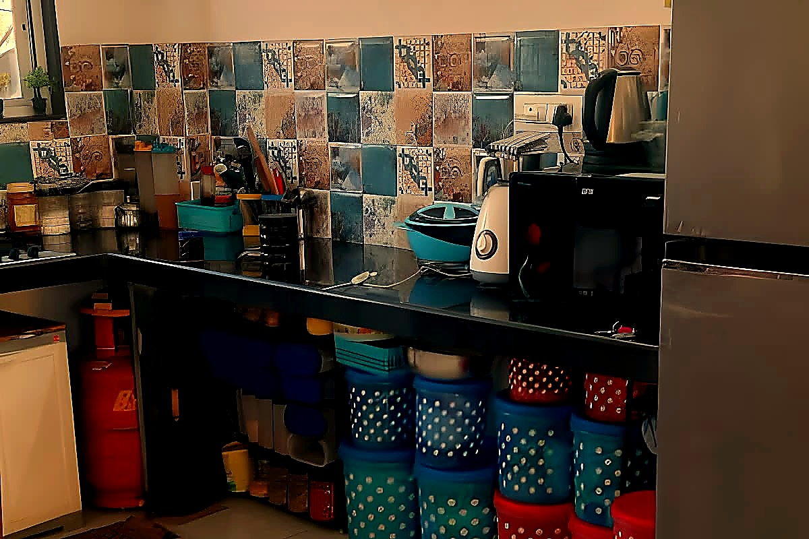
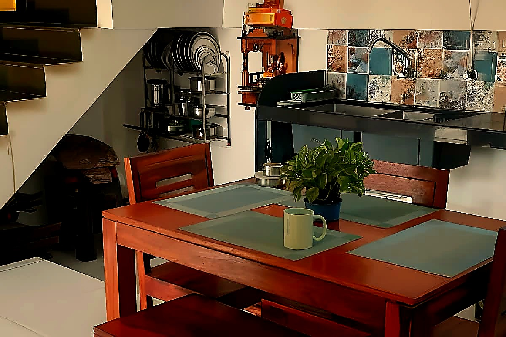
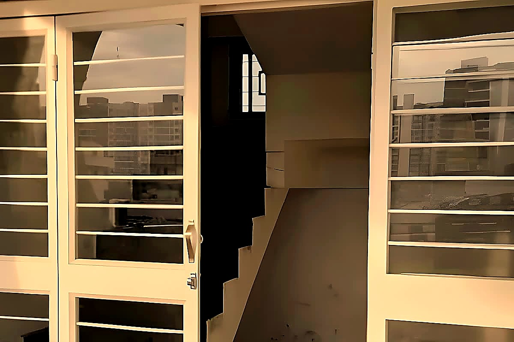
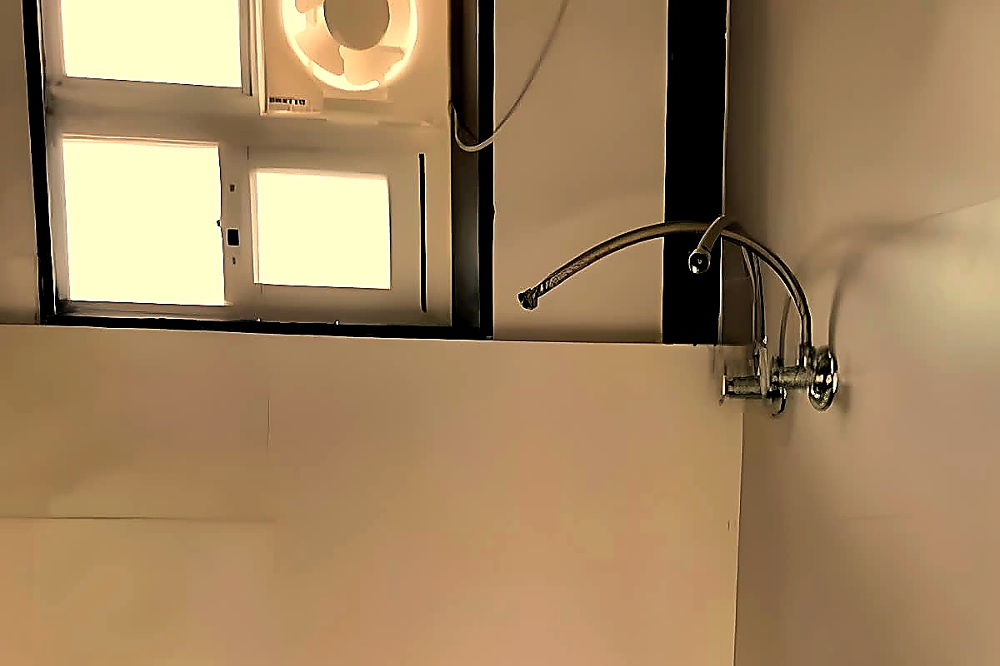
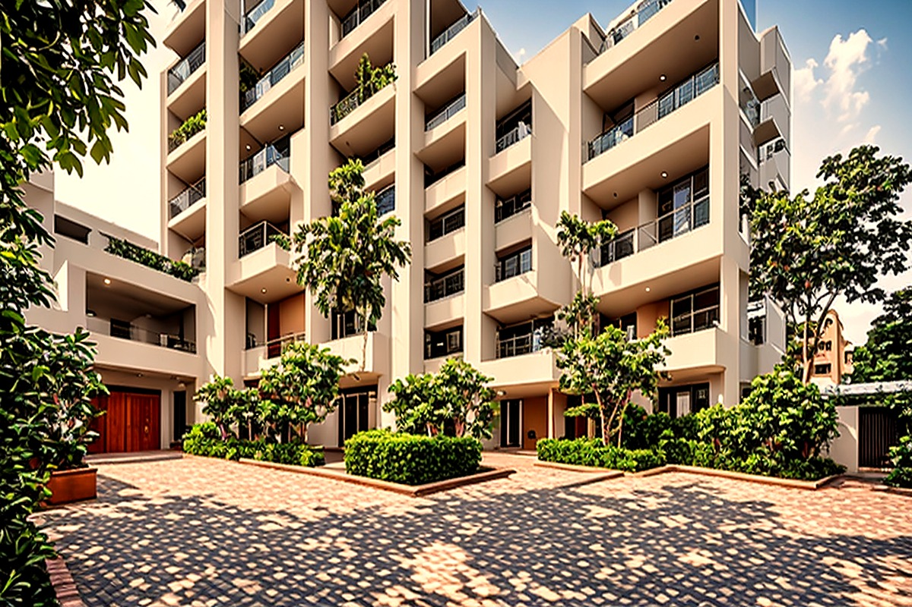

What co-living actually costs in Pune in 2026
If you are searching for a room near Moshi or Chakan, the first question is almost always: “What will it really cost me?” The sticker rent is only half the answer.
Read the cost guideNotes from the house, for the people joining us. Short reads. Honest costs. Moved here for work? Start here, friend.
No beds free right now. Tell us when you are looking and we will put you first when one opens.
If you are searching for a room near Moshi or Chakan, the first question is almost always: “What will it really cost me?” The sticker rent is only half the answer.
Read the cost guideI moved to Moshi for a plant job with two suitcases and a joining letter.
Read the first-move guideMoshi is a border town between Pimpri-Chinchwad and Chakan, on the old Pune–Nashik highway.
Read the Moshi guideIf you are new to the Bhosari and Moshi belt, the first number to compare is not rent alone.
Read the listings guideYou do not need a vehicle to work in this belt, but you do need the route numbers.
Read the bus-route guideFor years, workers in Chakan MIDC had to walk, share autos or rely on company transport for the last stretch inside the estate.
Read the Chakan bus guideDistance is a bad predictor of your commute in the Chakan belt.
Read the commute guideIf your vehicle is registered in the Bhosari, Moshi or Pimpri Chinchwad area, its records sit with RTO Pimpri Chinchwad, code MH-14.
Read the RTO guideTwo papers decide whether your two-wheeler in the MIDC belt is road legal or a fine waiting to happen.
Read the papers guideDust, stop start traffic and long daily mileage are hard on a commuter bike, and the maintenance calendar that matters most is the short one.
Read the bike-care guideFood is the second biggest line after rent for most newcomers, and Pune has two familiar models.
Read the food guidePune has a split personality that surprises newcomers from the coast and the north.
Read the weather guideBhosari and Chakan are not ordinary suburbs.
Read the belt guidePlant shifts set the rhythm of life in this belt more than the clock does.
Read the shift-work guideMost PG and co-living stays in Maharashtra are structured as leave and licence agreements, not full tenancies, which means the notice and exit rules in the paper matter more than the headline rent.
Read the signing guideFull guides follow below. Tap a card to read it. Bookmark the ones you like.
I like to write the costs down plainly. No surprises later. If you are searching for a room near Moshi or Chakan. The first question is almost always. “What will it really cost me?” The sticker rent is only half the answer. A monthly bed charge may cover water. WiFi and housekeeping, with electricity billed separately on actual meter usage. Food is often optional at owner-run properties. That is where first-timers get surprised. Ask what is included before you sign.
At Prajna Co-hab, twin-sharing is Rs 7,200 a month without dinner and Rs 10,000 with dinner. A single private room is Rs 9,200 without dinner and Rs 12,000 with dinner. The dinner plan means dinner only, breakfast and lunch are not included. The refundable deposit is Rs 12,000 for twin-sharing and Rs 14,000 for a single room. Lock-in is 3 months, then one month of notice.
The Moshi-Chakan corridor is often cheaper than Hinjawadi or Kothrud. Though prices vary by property and season, which is unverified here. You are paying for proximity to the plant gates. Not a prestige address. That trade-off works for many people on shift schedules. Shorter ride, lower rent, same essentials.
Before you sign, ask for a written breakdown. Rent, deposit, what utilities are included, how often the menu changes. What the notice period is. Vague answers become disputes later.
I remember my first week here. Small things mattered. I moved to Moshi for a plant job with two suitcases and a joining letter. What I did not know was that the neighbourhood often runs on two-wheeler time, not walking time. The market can be a short ride and a longer walk. Exact times are unverified here. Check the distance from any place you shortlist. If you do not ride, find a place near your shift gate or a PMPML stop that runs at your shift hours.
Second, monsoon can turn low roads into channels. Moshi and the Bhosari estate have good main roads. Interior lanes may flood between June and September. Ask the owner about last year’s waterlogging before you commit.
Third, the APMC yard is not just for traders. It can be a good source for vegetables. Fruit and groceries if you go early. Prices vary and that comparison is unverified here. Compare with nearby shops before you rely on it.
Fourth, home-cooked meals matter more than you think. After twelve hours on the plant floor. The last thing you want is to cook. A co-hab that offers optional dinner saves your evenings and your diet.
Fifth, lock-in and notice terms vary by property. At Prajna Co-hab the lock-in is 3 months. One month of notice. Elsewhere, ask what is offered and whether it is negotiable. Ask nicely.
Moshi grows on you, slowly and then all at once. Moshi is a border town between Pimpri-Chinchwad and Chakan. On the old Pune-Nashik highway. For a new resident, it is less a city and more a cluster. Factory gates, markets, messes, temples. An evening chai stand.
The Moshi market is the social hub. You will find vegetables, clothes, cycle repair and vada pav on the same lane. On weekends the crowd is larger. The APMC yard is bigger. Whether it is cheaper is unverified here. It is harder to navigate on a first visit. Take a local with you.
Transport: PMPML buses connect to PCMC, Pune Station and Kothrud. Frequency may drop after 8 pm, so check the current timetable. Autos are plentiful and unmetered; agree on a fare before you sit. Most residents ride two-wheelers; for many it is the fastest door-to-gate option. Fuel cost depends on your vehicle and route. No fixed daily figure is claimed here.
Food: mess thalis and local snacks are widely available. Current prices vary by shop and season and are unverified here. Ask locally for up-to-date prices. The sweet shops along the highway are good for evening chai. If you are vegetarian, you will eat well. Non-vegetarians have fewer options but decent ones.
For weekends, Alandi is an easy day trip. Sinhagad and Lonavala need an early start. Check travel times before you set out.

When you look for a room, look past the first photo. If you are new to the Bhosari and Moshi belt. The first number to compare is not rent alone. It is rent plus deposit plus what the lock-in locks you into. Live listings in this belt cluster per bed. The spread is wide enough that averages mislead. Housing listings show triple sharing in Bhosari and Moshi from about Rs 3,500 per bed with deposits from Rs 5,000 to Rs 7,000. A double sharing girls PG in Bhosari listed at Rs 3,000 per bed with a Rs 3,000 deposit. 99acres lists a Sector No 1 Bhosari sharing room at Rs 4,000 per bed with Rs 6,000 deposit. An executive boys PG on the Pune Nashik highway between Moshi and Bhosari at Rs 5,500 per bed for 3 or 4 sharing and Rs 6,500 for 1 or 2 sharing, with Rs 10,000 deposit and an 8 month lock-in. The lesson for a newcomer is simple. Fewer people per room, more furnishing and a longer lock-in move the price up. Ask for the full sheet. Sharing count, meals, electricity cap, deposit refund rule and notice period. In writing, before you pay anything.

The bus numbers are the real shortcut here. You do not need a vehicle to work in this belt. You do need the route numbers. PMPML runs a dense set of numbered routes through Bhosari. Several of them do the exact jobs a newcomer needs. Route 120 runs Bhosari to Mahalunge MIDC through Moshi. Chimbali Phata, Kurali, Alandi Phata and Chakan. Which is the backbone for plant shifts in Chakan. Route 358 runs Bhosari to Chakan Ambethan Chowk and also to Rajgurunagar. It covers the Chakan leg in the other direction. For Hinjawadi, routes 324 and 380 both run Bhosari to Hinjawadi Maan Phase 3. Route 299 runs Bhosari to Katraj for the southbound cross city trip. Route 361 links Bhosari to Alandi. Routes 367 and 369 link Nigdi to Bhosari and to Chakan Vasoli. Treat route numbers as the stable fact and timings as perishable. Fares, first and last buses and frequency change with depot notices. Check PMPML before you promise a joining day around a bus.

Good news travels fast on the Chakan road. For years, workers in Chakan MIDC had to walk. Share autos or rely on company transport for the last stretch inside the estate. That changed in August 2025, when PMPML launched services inside Chakan MIDC after a long pending demand from the Federation of Chakan Industries. The circular route starts at Ambethan Chowk. Passes Alandi Phata, Nighoje Phata, Mercedes Chowk. Skoda Gate 1, Sigma Chowk, HP Chowk and Bajaj Company. Mahalunge, Kharabwadi and Chakan, before returning to Ambethan Chowk. A second route links Bhosari to Nighoje village through Chakan Road. Moshi Octroi, Moshi Village, Chimbali Phata and Kurli Phata. Mercedes Chowk, Skoda Gate 2, Sigma, Endurance and Mahindra Company gates. Reports say buses run every 30 minutes and that women conductors were deployed for women commuters. For a newcomer living in Moshi or Bhosari. This matters because the Bhosari to Nighoje route stitches your home stop to the deepest company gates. Confirm the current frequency on the day you travel. Since launch reports are a starting point, not a permanent timetable.

Leave early. Then leave a little earlier still. Distance is a bad predictor of your commute in the Chakan belt. A Moshi resident working in Chakan MIDC told Times of India his travel time rose from 40 to 45 minutes to nearly two hours. That arriving late can mean staying back to complete an 8.5 hour shift. Hindustan Times reports the Pune Nashik highway between Bhosari and Ambethan Chowk is severely congested daily, with Pune city to Chakan trips sometimes taking two to four hours. 20 companies considering relocation over traffic and infrastructure. Another Times of India report quotes a truck driver spending nearly three hours just to exit Chakan MIDC to the Nashik highway. A Spine Road to Chakan trip that once took 20 to 25 minutes now taking close to two hours on a good day. The practical takeaway for a new joiner is to budget time, not kilometres. Shift workers leave half an hour early and still get caught. Ask your employer about shift start buffers. Company pickup points and biometric rules before you choose a room by distance alone.
Papers first. Tea can wait. If your vehicle is registered in the Bhosari. Moshi or Pimpri Chinchwad area, its records sit with RTO Pimpri Chinchwad, code MH-14. The office operates from Purna Complex, A Wing. Opposite Telco Gate on Chikhali Road, Pimpri Chinchwad, Pune 411019. Its published phone number is 020-27492828. MH-14 is a separate registering authority from MH-12 Pune. A vehicle keeps its number when you move between the two. Address and NOC paperwork may follow. The office handles new registration, driving licence issue and renewal. Ownership transfer, permits, fitness certification and PUC verification. For registration, the standard file is Form 20 for the application. Form 21 the dealer sale certificate, Form 22 the roadworthiness certificate. Plus insurance, identity and address proof, PAN or Form 60. The purchase invoice. Registration cannot be completed without valid insurance in force. Many newcomers use the Parivahan portal for status checks and renewals. Which saves a trip when the file is ready.

Two small papers. One big headache if you forget them. Two papers decide whether your two-wheeler in the MIDC belt is road legal or a fine waiting to happen. The first is the PUC certificate, which certifies emissions are within norms under the Central Motor Vehicles Rules, 1989. For a new two-wheeler the first PUC is valid for one year from registration, after which renewal is every six months. Multiple guides put the first offence fine at Rs 1,000 and a repeat at Rs 2,000, with testing charges around Rs 50 to Rs 100 depending on the centre. The second is insurance. Third party cover is the legal minimum. Zurich Kotak notes driving without valid insurance draws Rs 2,000 for a first offence and Rs 4,000 for a repeat, plus personal liability for third party compensation. Insurance is also needed at registration and ownership transfer. A lapsed policy can stall RTO work that has nothing to do with the road. Set a phone reminder at four months, not six.

A commuter bike asks for little. Give it that little. Dust, stop start traffic and long daily mileage are hard on a commuter bike. The maintenance calendar that matters most is the short one. Engine oil typically changes every 3,000 to 5,000 km. Air filters need cleaning or replacement every 5,000 to 10,000 km. Chain lubrication is a 500 to 1,500 km habit. Not a service centre ritual. A general service at an authorised centre is commonly quoted between Rs 800 and Rs 2,500 depending on brand and capacity, with major services every 15,000 to 20,000 km adding valve, fork and brake fluid work. Yearly totals vary a lot by source and model. One guide puts a 100 to 125cc commuter at Rs 3,200 to Rs 7,700 a year for service plus wear parts, while another puts commuters at Rs 8,000 to Rs 12,000 a year including tyres and miscellaneous. The honest Guide line is to budget monthly. Follow the manual whichever comes first, kilometres or months. Keep bills. For Pit posts, ask the model and kilometres run before anyone prices a repair.

Home food changes how a long day feels. Food is the second biggest line after rent for most newcomers. Pune has two familiar models. A mess gives you a fixed seat and fixed hours. Usually two meals a day, which suits shift workers whose plant timings change. Indian Express reported monthly mess charges for two meals rising from Rs 3,000 to between Rs 3,500 and Rs 3,800 in Pune, with basic breakfast items like poha and upma moving from Rs 20 to Rs 25. A tiffin service delivers a packed meal, usually lunch plus dinner. Pune listings commonly quote Rs 70 to Rs 120 per meal. Which works out to roughly Rs 2,100 to Rs 3,600 a month for one meal a day over 30 days. About Rs 4,800 a month for two meals at Rs 80 each in one worked example. Neither figure is Bhosari specific, so treat them as Pune wide guides. Before you join, ask what happens on leave days. Whether Sunday and holiday meals are included, how cancellation works. Whether the kitchen holds an FSSAI licence. Save the menu of the first week and compare it with your shift hours.

Pune weather has moods. Pack for them. Pune has a split personality that surprises newcomers from the coast and the north. The monsoon runs roughly June to September and delivers most of the year rain, while the dry season runs November to May. IMD Pune climate normals show July as the wettest month at about 187 mm with 12.8 rainy days, followed by August at about 122 mm and September at about 120 mm, with June at about 116 mm. Winters are mild rather than cold. January and December daily minimums average about 11 to 12 degrees. While April and May are the hot months with daily maximums averaging about 38.1 and 37.2 degrees. A second climate table for 1981 to 2010 puts average annual rainfall near 805 mm over 49 rainy days, with monthly figures in the same shape. For daily life near Bhosari and Chakan, the practical read is simple. Pack for a wet commute in July and August. For warm afternoons in April and May. For cool mornings in December and January. Recent Octobers have varied sharply. Check the IMD forecast in the week you move.
This belt was built by factories. It shows, in a good way. Bhosari and Chakan are not ordinary suburbs. They are one of the oldest industrial belts in Pune. Built along the Pune Nashik highway, now National Highway 60. On the eastern edge of Pimpri Chinchwad. Bhosari sits about 10 km east of the PCMC city centre and hosts the Bhosari MIDC, described as the largest industrial area in the region, with Tata Motors, Philips, Thermax and Century Enka named among its major companies. A journal study of MIDCs in Maharashtra dates the Bhosari estate to the late 1960s expansion and notes more than three thousand MSMEs working in the Bhosari MIDC area alone, supplying parts to the large plants. Chakan, further north on the same highway. Is the auto manufacturing hub with companies visible on the PMPML route maps, including Mercedes, Skoda, Bajaj, Mahindra, Sigma, Endurance and HP. For a newcomer, this history explains the present. The worker housing, the truck traffic, the bus routes and the RTO are all downstream of the plants.

Shift life runs on a different clock. Plan around it. Plant shifts set the rhythm of life in this belt more than the clock does. Times of India reports Chakan MIDC workers with biometric attendance where arriving even 15 minutes late is marked absent and can trigger salary deductions, which is why workers leave half an hour early and still get caught in snarls, reaching home about 30 minutes later on the return. Hindustan Times reports second shift employees unable to reach workplaces on time, with production affected. For a newcomer, the practical questions are therefore about timing, not comfort. Ask your employer for the exact shift start. The biometric grace window, the company pickup point and whether the shift bus runs on Sundays. Choose food and sleep around the shift, not around office hours. A mess with fixed dinner hours may miss a late shift. While a tiffin you can carry may fit better. Test the commute at your actual shift hour once before your joining day, because a 9 AM trial tells you nothing about a 10 PM return.
Read the paper slowly. Ask us anything. That is what we are here for. Most PG and co-living stays in Maharashtra are structured as leave and licence agreements, not full tenancies, which means the notice and exit rules in the paper matter more than the headline rent. Housewise notes that in Maharashtra every leave and licence agreement must be registered regardless of duration. That standard security deposits in most cities sit at one to two months rent, with non-refundable deposit language as a red flag. Notice periods in PG contracts are commonly 7 to 30 days. Physical eviction or utility cutoffs without due process are not legal routes. RentTenant explains the distinction newcomers often miss. Lock-in is the minimum stay from day one. Leaving inside it can mean deposit forfeiture or paying the remaining lock-in rent, while notice is the advance warning owed after lock-in. Skipping it can mean rent in lieu of notice. Read for the bed or room assigned. What the fee covers, deposit deduction conditions and refund timeline. Notice from both sides. Stamp and registration status. Get it in writing before you pay.
Notes from residents and visitors who stayed at Prajna Co-hab.